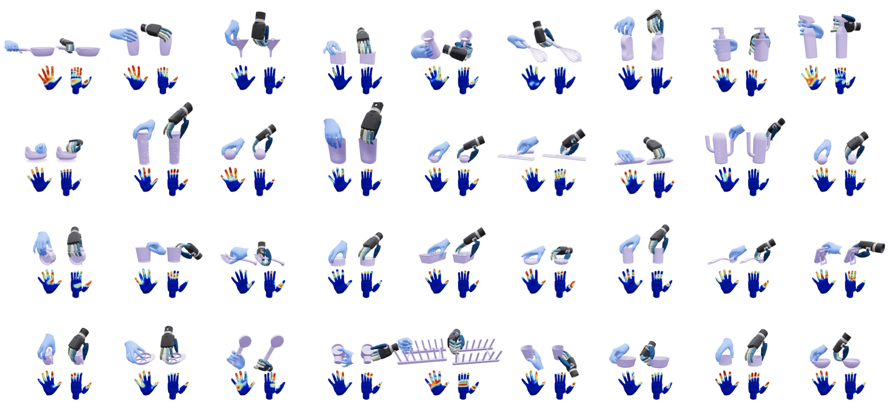
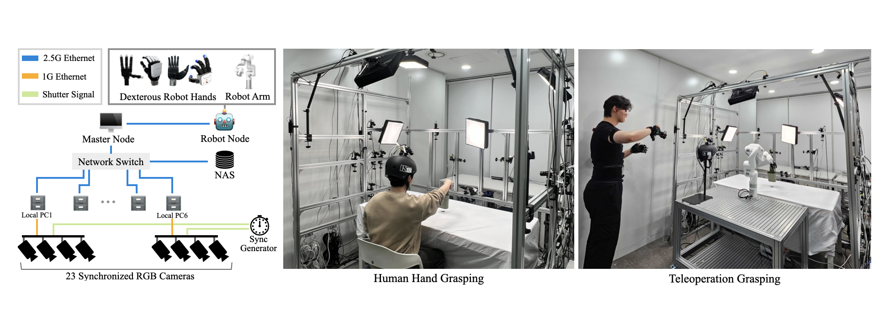

Abstract
Dataset Overview
HRDexDB is the first large-scale dataset featuring paired human and dexterous robotic hand manipulation. It provides over 2.1K sequences across 100 diverse objects and 5 distinct embodiments, all captured by a fully synchronized 23-camera system. We provide detailed 3D annotations for every sequence. You can see a sample visualization of our dataset below.
High-fidelity human dexterous grasping sequences captured across diverse objects.
Paired robot hand executions recorded with synchronized visual and kinematic modalities.
3D Annotations
Paired human and robot annotations visualized across synchronized views.
Contact Visualization

Contact visualization highlighting interaction regions during grasping.
Tactile Signals
Unlike other existing robot datasets, HRDexDB provides rich tactile signals for the Inspire & Allegro robotic hand series.
Tactile sensing stream synchronized with the grasping sequence.
A Unified Multi-Modal Data Capture System

To construct HRDexDB, we developed a unified multi-modal capture platform. It features a dense rig of 23 synchronized cameras, integrated with real-time robot proprioception. This setup is specifically engineered to overcome severe occlusions during interaction with objects.
Full Video
Full HRDexDB overview video.
Contact
Send any comments or questions to Jongbin Lim: whdqls0534@snu.ac.kr or Taeyun Ha: taeyun012@snu.ac.kr.
Citation
@misc{lim2026hrdexdb,
title={HRDexDB: A Paired Human-Robot Dataset for Cross-Embodiment Dexterous Grasping},
author={Jongbin Lim and Taeyun Ha and Mingi Choi and Jisoo Kim and Byungjun Kim and Subin Jeon and Kanghyeon Cho and Seongho Cha and Hanbyul Joo},
year={2026},
eprint={2604.14944},
archivePrefix={arXiv},
primaryClass={cs.RO},
url={https://arxiv.org/abs/2604.14944},
}